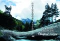
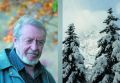

Станислав Подольский
СТАРЫЕ СОСНЫ
Нагорная страна. Книга 6


Стихотворения
2008 - 2013
Кисловодск
Северокавказское издательство МИЛ, 2014
издание осуществлено за счет средств автора и в авторской редакции.
В книге "Старые сосны" представлены работы С. Подольского 2008-2013 года в порядке лирического дневника. Авторскому почерку присуще разнообразие поэтических форм - от верлибра до кристаллического верметра. В последний час в книгу включен цикл стихотворений "Паломничество в Крым": стихи, возникшие в давние годы оказались пророческими.
На пороге
2008
Хрустальный день.
Лишь тушью ледяной
прочерчены деревьев вереницы,
дворцы промёрзшие,
прохожих лица -
и голубой заоблачный покой...
Густая грусть
в морозном полусне
мерцающими бликами разлита...
Но колесо обзорное вертится.
И солнце там, за крышами, садится.
И сердце задыхается во мне -
в великой предзакатной тишине.
И музыка прощанья хрупко длится...
Куда стремлюсь?
Откуда возвращусь?
Дрожит от напряженья электричка.
Хрустальный свет летит,
сияет, длится,
томительный, как красота и грусть...
01.02.2008 г.
Гаснет день, такой цветной,
как с переводной картинки.
Горы сгрудились толпой
на вечернем фотоснимке.
И летит кораблик вдаль
между склонов чёрно-белых -
электрический корабль,
металлическое тело...
Невидимкою душа
в нём ютится, озираясь:
жизнь, любовь, зелёный шар...
Притаилась, чуть дыша,
большеглазая такая...
1 февраля 2008 г.
Бештау совсем поседел,
февральской зарёю подцвеченный, -
колючий кристалл в бороде
у вечера синей невстречи.
01.02.2008 г.
Из цикла "Виды Бештау"
"В этой "маленькой" войне
в этой бедственной стране
я убит, зарыт, застужен,
брошен, никому не нужен...
Пожалейте обо мне!"
23 февраля 2008 г.
Свежий март за окном,
острый, дикий.
Тучи свились клубком,
даль размыта.
Свищет ветер, живой,
настоящий,
пахнет жизнью сырой,
страстью - насмерть!
Отменяет покой,
быт законный.
Дышит жизнью, тоской
заоконной,
раздирая уют,
хмурый, пресный...
Я ещё пропою
свою песню!
11 марта 2008 г.
Опять земля зазеленела!
Газоны поправляет
вездесущий "Зеленстрой".
Старинный город знает своё дело -
живёт тревожно
под горой.
Заоблачно сияет солнце.
Цветут и абрикос, и алыча.
И перезвон синичий рвётся
сквозь веточек зелёный чад.
Привет, воскресшая природа!
Ты вновь сплетаешь жизни нить.
И я замешкался у входа:
сквозь солнце жальче уходить...
16 апреля 2008 г.
Как дышится в апрельском гаме,
где ветер юностью саднит,
где утро свежими дарами
и озаряет, и пьянит,
где не устанешь удивляться
простым извечным чудесам -
распевам пеночки невзрачной
и первоцветовым глазам...
16 апреля 2008 г.
Тихий дождь за окном,
всё притихло кругом,
небеса нежно землю клюют.
Только листья шуршат,
только дышит душа,
только травы безмолвно живут.
Недвижимо сижу,
ненаглядно гляжу
в хмурый мир за окном -
свежий, вешний.
Я ещё оживу,
я ещё заживу,
я ещё пропою свою песню...
7 мая 2008 г.
...Свищи, певец,
выделывай коленца!
Твоя весна в разгаре,
мой дружок.
Вон синевой сияет неба клок
и свесилось сирени полотенце...
Но солнце пригревает чересчур:
похоже, лето где-то на пороге,
а там - жара,
и грозы, и тревоги,
и осени пылающий недуг,
и сбор плодов,
подбитие итогов...
Любить и петь, как будто, недосуг...
А там - зимы сверкающей чертоги,
и в черно-белом Некто
смотрит строго,
и оторопь снежинок, и испуг
перед ледовым откровеньем рук
и сердца - вдруг - успокоеньем...
и кто весну воспомнит наконец?!.
Свищи и плачь! -
Она твоя, певец!
21 мая 2008 г.
Цветут каштаны - вихри света -
над влажной дождевой планетой.
И хочется пылать, кружить,
смеяться, радоваться, жить.
И птицы светятся хрустально,
желая поделиться тайной
светанья, нежности, любви
и жажды радости в крови.
И в каждой капельке природной
слепой посверкивает дождик.
и даже юная трава,
как рать небесная жива...
Лишь уходящий в горы горец
каштановую чует горечь.
Его седая голова
пуржит
и светится едва...
21 мая 2008 г.
какие полчища трав
какие взрывы листвы
какое излучение радости
время мая и юности
впусти мир в себя
и он узнает тебя
как сына
и горы вдали и вблизи
воскликнут приветствуя тебя
и синий воздух ворвётся
в твои лёгкие
разжигая костёр
жизни твоей и любви твоей
пылающей синеоко
а вечером
после жаркого дня
мир уже не кажется
так прекрасен
потому что он
горько-прекрасен
23 мая 2008 г.
Роскошная весна,
вся в зелени и влаге,
сплавляет в синеву
большие облака...
Блистательным щеглом
бросаешься к бумаге
в стремленье удержать...
Но плавится строка.
Бредёшь сквозь дождь вокруг
и ледяные блёстки,
сквозь прошлого испуг,
печаль и круговерть
и замечаешь вдруг,
что жить легко и просто,
и, знаешь, нежный друг,
не страшно умереть
13 июня 2008 г.
Тишина вечерней земли.
Лай собачий. Вороний карк...
Ничего-то мы не смогли -
всё что есть получили за так:
тишину, всю в шептаньях крон
поднебесных,
сухой озон
откровенья - во мгле,
ворон
предсказанья в глуши,
во вне,
и сердечный гон
в тишине...
Июль 2008 г.
Земля в туманце газовом лежит.
Бештау сумрачный грозит засадой.
И солнце красноглазое висит
над миром - разным...
Ах, отправляться вдаль нам не впервой:
поля, огни, пригорки, перелески -
вот этой утренней страною дорогой
в прощальном блеске.
Куда стремлюсь?
Кого увидеть тщусь?
Какую стаю?..
Но знаю, верую -
сюда вернусь, вернусь...
Вернуть мечтаю
вот эту даль, туман и в синеву
полёт небесный -
всю эту ненаглядную страну
в кровавом блеске...
27 сентября 2008 г.
Какая красивая земля -
словно распаханный шоколад -
для пшеницы, рапса,
сахарной свёклы, ржи.
Будет пища для женщин, мужчин,
дошколят...
Всё будет о`кей! -
Это мы лежим.
27.09.2008 г.
Золото, смирну и ладан
по миру осень разносит,
молодость, мирную радость
под ноги ссыпала осень.
Тихо бреду по развалам
царских подарков истлевших.
Ах, ничего мне не жалко
в этот обугленный вечер.
Сколько живу - не умнею...
Светлая, дай наглядеться!
Чаю подарков скромнее -
воздуха, сини и детства...
6 октября 2008 г.
небо вспыхнуло
мчится с востока
безмолвно-радостный
взрыв
деревья чёрные
ветки - дыбом -
в огонь небесный
забросили
крыши домиков
мимолётных
струпьями крови
стынут в тиши
теневой
вот и Гора проступила
вдали из туманца
сизым трезубцем
тихо
пустынно
свежо
мир накануне
убытия
15.11.2008
Из цикла "Виды Бештау"
Туман объял высокое чело...
Болит Гора.
И голова в отчаянье.
Явился в мир тревожно-лучевой
и ухожу
в стремительном молчании.
15.11.2008
В тумане дорога,
и рощи окрестные,
и будущее,
которого нет.
Есть мчанье в степи,
и просторы безбрежные,
и ясный, простой,
сострадательный свет
15.11.2008.
Неужели мир стареет с нами?
Как блистала по утрам роса!
Как свежо весной дышали травы!
Как шумел и волновался сад!
Осень навалилась дымным небом.
Мусором усыпаны пути.
Стонут перетянутые нервы -
не пройти.
Дети обернулись стариками.
Ёжится обиженный народ.
Неужели в зиму вместе с нами
жизнь уйдёт?
Неужели не найдётся почки,
чтоб весной, росинками звеня,
вспыхнули опалово листочки
накануне радостного дня?
26.11.2008.
Импровизация
2009
Какая красота!
Весь мир лежит, заснежен,
укутан ласковой
прозрачной белизной.
Лишь рощи черные
штриховкой свежей
расчерчивают
горы за рекой.
Просторные снега...
Не так уж это часто -
безбытно вырваться
в безмолвье и покой,
в вагоне пригородном
безучастно мчаться
и строки выводить
дрожащею рукой
о том что всё ушло -
восторги и унынье,
любовной горечи
ожог и пьяный жар...
Остался лишь полёт
в сверкающей пустыне
и солнца дикого
закатный рыжий шар.
9 января 2009 г.
Синева с молочком внутри
светится.
Как бы нам на минутки три
встретиться!
Запорошен весь мир до глаз -
беленький.
Поцелуй, как в последний раз, -
бережно.
Как снежинки летят слова
мирные.
Поседела вмиг голова,
милая.
Но и белый стих так хорош -
режется,
словно небо с ледком, где нож
месяца.
Как прощались-то - не чаяли
свидеться...
Вот и встретились невзначай
в зимушку!
Синева с молочком тумана,
свежий ветер и талый снег...
То ль весна подступила ранняя,
то ли память горчит во мне?
Так светло над снегами стелется
излученья родного взор,
словно в детстве.
И вновь - бессонница
и мечтанья крылатый вздор...
Знать, не зря откликалось тело,
и щемила душа не зря:
нет отчаяния, нет предела,
и сияние не отгорело -
снова ясен и счастлив я...
Всё вокруг - родная земля.
15-17 января 2009 г.
Пустынная весна...
Вдоль вьющихся просёлков
деревья тощие торчат.
Всклокоченные травы прошлогодние
свисают с горных склонов
шерстью ломкой
и пахнут дичью жёлтой,
и горчат...
А на пригреве, глядь,
уж зеленца пробилась.
И распустили женщины причёски.
И окна блещут как-то больно влажно.
В садах грачи разгуливают важно.
И синь густая веет надо всем...
Кой-где копают огороды.
С полей ползёт пожогов чад.
И комья чёрные земли моей кричат
о пробуждении народа...
12 февраля 2009 г.
/Шутка/
Весна уже не за горами:
капелью дребезжат звонки,
дрожат деревья словно пламя,
приоткрываются ларьки.
Уже весна не за горами,
а горы белые стоят.
И плещут голуби руками.
И неба звон ласкает взгляд.
Весна совсем не за горами,
скорей всего, уж здесь она.
Вон крыши едут головами...
Моя летит! Ловите, на!
12.02.2009 г.
Ещё вчера темнела даль,
а нынче зелень вновь смеётся,
и трель дрозда привольно льётся,
и солнце блещет, как медаль!..
Но кто-то помнит серый лёд -
сквозь строй деревьев бесприютных,
и дрожь бездомных и приблудных,
и снега режущий полёт...
Ах, пёстрый лет круговорот -
гвоздит, печалит, мчится, льётся...
Но вот опять весна смеётся -
и всё избытое не в счёт!
8 мая 2009 г.
Сняли цензуру -
хлынула ложь.
До правды дела
никому нет...
Ждите же глада,
и труса, и бед,
мора и горя -
по чём зря живёшь!
Да и прежде-то было
лжи невпроворот:
херили правду,
пропускали бред...
Что за безумье!
Что за народ!
Ждите бездумья,
трусов и бед.
Май 2009 г.
В сторону Гёте
каждый вечер умираю
каждое утро воскресаю
как весь мир
как все существа
и вселенные
быть может
это и есть бессмертие
быть может
всё-таки стоит жить
быть может
не надо раболепия
страха алчности
злобы и лжи
быть может человек
всё-таки не машина
быть может достоинство и добро
выше власти
быть может люди
не мусор и не плесень
мира
быть может всё
ещё может быть:
утро и свежесть
солнце и сосны
небо и птицы
юность
во мне и вовне
плачу и
улыбаюсь
сквозь слёзы
сверкающие
19 мая 2009 г.
Распылались горы свежие!
В травах скроюсь с головой.
Отгорело горе прежнее.
Снова - брежный, молодой -
заблудился в жгучем проливне
света, воздуха, криниц...
Заблудиться и опомниться!
Стать просторным - без границ!
Отойдет восторг неистовый
воскрешенья и любви...
Но ведь встретились немыслимо!
Я здесь верил.
Я здесь был...
Речки шумят.
Кроны мятутся.
Неба раскат,
озера блюдце -
связано всё
тайною нитью:
детства глоток
дышит и длится...
- Кто ты такой?
- Гость мимохожий.
Горькой строкой
радости множу.
Грустным шажком
мир обнимаю -
детством, лужком,
строчкой, стежком...
Участь такая.
Май 2009 г.
Всё залито лиловым закатом -
лица, город
и горы вдали...
Электричка - громовым раскатом
мчится, в пламени вся, -
посмотри!
А вокруг суровеет окрестность:
что цвело, то теперь сожжено, -
словно ада глухое предместье
смотрит в душу,
в глаза и в окно...
Мчусь в грядущее иль убегаю
от всего, что томило и жгло,
к своему изначальному маю,
заломивши страницы крыло...
6 ноября 2009 г.
Воздух спиртовый
сжигает мне щёки,
в лёгкие льётся
ледовой струёй.
Слышно-неслышно.
Легко. Одиноко.
Осени вешней
великий покой.
Тлеют шаги
в облетевшем пространстве.
Радость и горесть
давно за Рекой.
Только б шагать
предвечерьем глазастым,
воздух сырой
раздвигая рукой...
6 ноября 2009 г.
Какой денёк прекрасный -
туманец, синева!
Лучи сквозят отвесно.
Прозрачнеют слова.
Каштанов позолота,
и тушь сосновых крон.
Поток родного света,
соборный перезвон.
Любимая картина
небесной высоты:
лицо Отца
и Сына
прощальные черты.
17 ноября 2009 г.
Серебряный Подкумок,
поток среди тревог -
летит седой и юный
весёлый полубог!
Когда-то в нём купался
весеннею душой.
Да так вот и остался -
сам-меньший, сам-большой...
Сверкай, играй и смейся,
зелёная вода!
Напьюсь - и снова здешний,
летящий навсегда!
17 ноября 2009 г.
Бреду
лесом, ущельем, дебрями.
Давно исчезли
дорога, тропа, следы
прошедшего прежде меня.
Проламываюсь, пробираюсь,
продираюсь.
Сучья, колючки содрали давно
пуговицы, одежду, кожу и
мясо,
до зеркального блеска отполировали
нервы, сухожилия, кости.
Последнее стирается понемногу.
Скоро душа
освободится, вырвется
на свободу,
взлетит, растворится
в звёздах
без остатка
13 ноября 2009 г.
Здравствуй - до свидания.
Здания - знания, звания.
Население - зрения.
Колесо - оборзения.
Вислозадый - пейзаж,
Отставляю - на раз.
Поезда - отступления.
Небеса - отчуждения.
Полоса - невезения...
До свиданья, чудак!
Что-то в мире - не так...
10.12.2009 г.
Бештау в тумане,
Машук в облаках.
Лес теменью манит.
Буянит река.
И синие птицы
парят над душой.
И день серебрится,
осенний, большой.
И совесть в молчанье
стоит у межи.
И голос молчанья
в гортани дрожит.
И стая снежинок
у сердца кружит.
И тают печали.
И теплится жизнь...
26 ноября 2009 г.
Скорый "Весна - Осень"
2010
Сиреневый снег
да зелёное небо.
Рычащий полёт
"Мерседеса" в рассвет.
Такой красоты
небывалой, нелепой
не видел, пожалуй,
я даже во сне!
Простерлись безмерно
седые предгорья,
которыми мчусь
сломя голову вдаль.
Согнулись деревья
под снегом покорно.
Зато распрямилась
бродяжка-душа...
27 января 2010 г.
На запад - тучи обложные,
с востока - колосится свет.
Травинки острые густые
пронзают снеговой скелет
земли, прибитой холодами,
исчёрканной верченьем шин.
Рычит рокада меж холмами,
глотая сумрачный бензин...
Всё как обычно в мире странном.
Грозит громами тишина.
Одно свежо и долгожданно -
весна!
И на душе весна!
2 апреля 2010 г.
Весна шагнула ветрено в мой дом,
повымела бумажки, мусор, лом,
из подземелья вызвала траву,
отмылила густую синеву
небесную, в разводах облаков...
Всё стало так распахнуто-легко.
Мир обернулся юностью для глаз -
прозрачный и цветной -
алмаз, топаз!
И снова захотелось петь и жить,
и Богу жизни ветреной служить,
и улыбаться простоте до слёз...
Мне радостно - я до весны дорос!
7 апреля 2010 г.
Сегодня я побывал
в театре мира неслыханном.
Там горы витали и
простирались
кристаллами полупрозрачными.
Там облака вихрями неподвижными
заполонили небо безмерное,
а в промоине ледяной
солнце пылало и плавилось.
Там поля полыхали
гречихой жаркой
и зеленью звонкой озимых.
Там воздух влажнел и сиял
свечениями самоцветными,
а столбы света звучащие
мощно упирались в холмы
и леса первозданные...
Но место нашлось там
и цивилизации строго-
стремительной,
расчерченной автострадами,
где планеты автомобилей
бесшумно скользили
с теми внутри, кому надобно
вселенную охватить на лету,
не повредив,
любовно и бережно...
И всё это представление
небесно-искреннее
играла природа
для меня -
мимолётного зрителя -
щедро и бескорыстно
даря мне величие
мгновенно-бессмертное...
Схватил и унёс
душой воскрешённой
безмолвно
навеки.
Апрель 2010 г.
Неслыханно прекрасный мир.
Неслыханно нежное солнце.
Неслыханно воздушные горы.
Неслыханно свежие облака.
Неслыханно плавная автострада
с нарядными гаишниками
по обочинам.
Неслыханно мирные леса и поля
и домики ослепительные
в зелёном и золотом
под синью, бездонной
навеки,
где странствуют птицы и облака
и души, и взоры, и ангелы,
и человеки
11 сентября 2010 г.
Шары деревьев чёрнозелёные.
Ледяные облака стремительные
в мрачной бездне беззвёздной.
Огоньки вдали трепетливые
окон, прозрачно мерцающих, -
мириады вокруг...
Всё серьёзно,
жёстко,
неулыбчиво,
честно
живёт
этой ночью.
06.10.2010 г.
Неприбранная осень,
как женщина в домашнем затрапезе, -
неряшливая, милая, простая,
чуть-чуть печальная:
устала...
Но тихие прозрачные глаза...
И волосы растрёпки дорогой
дымком пропахли горьковатым...
И терпкость лёгкая на языке...
И сердце чуть щемит...
"Что было - будет, -
прорицал пророк. -
Всё кончится, прейдёт,
угаснет, отойдёт,
состарится, остынет.
Даль неясна...
Всё возвратится в прах..."
- Ты прав, Пророк...
Сейчас она прекрасна!..
5 ноября 2010 г.
/Из давней тетради/
Сначала контуры нанесу
сажей вековой
сгоревших
прокуренных лёгких.
Затем подмалюю
щёки
лихорадкой души
догорающей.
На губы выжму
тюбик с ошмётками
крови запёкшейся.
Зелёнкой тоски
выкрашу
стрижку "креативную".
Для глаз
угольки угасающие
собственных взоров
повыковыриваю.
Крылья снов и обид
сами размашисто
выпростаются, зашумят
ветром и холодом...
Размажу и выброшу
картинку бредскую -
портретик последней
лжи и любви,
крылатую вестницу
гибели...
1965 - 2010 г.
Из цикла "Виды Бештау"
Бештау в дымке пепельной таится,
опасный, искренний,
высокий навсегда,
весь остриями устремлённый
к выси,
туда где к вечеру
уж теплится и длится
зелёная-зелёная звезда...
5 ноября 2010 г.
Скандалим на службе
бессмысленной.
Барахтаемся с
блондинками гламурными
в приснившемся
замке на песке.
Подсчитываем дивиденды
тщательно
во тьме кромешной
чужих карманов.
Балдеем, впрыскивая
в бёдра увядшие
дозы счастья
копеечного.
Не видим неба
синеву бездонную.
Облака прохладу первозданную
смахиваем с ресниц, обожжённых
куревом.
Речки шепотки младенческие
глушим гудками
автомобильными.
Свежесть лесную целебную,
моря мощь обнимательную
запамятовали, загасили
окурками придурковатыми.
Ветер жизни спасительный,
золото восходов и закатов
неразменное
размениваем ежесекундно
на мелочь бренчащую
выгоды -
полуавтоматы унылые...
10.12.2010 г.
Ежедневник
2011
... и, может быть,
на мой закат печальный
блеснёт любовь
улыбкою прощальной...
А.С.Пушкин
Спасибо, жизнь,
что провожаешь меня
улыбкой синеглазой
слепительной,
когда мир всё ещё
в снегу,
когда обнажаются постепенно
крыши и тайны
заржавленные,
когда капель барабанная
настойчиво
пробивает дорогу
подснежникам талым,
ибо не хочется уходить
во мраке безжизненном,
где нету
любимых...
04.03.2011 г.
Лес всё ещё сквозной,
а небо - темно-серое,
и птицы не летят
в родимые места.
Но что-то светится,
пока несмелое,
и обещанием свежеет высота...
Шагну в вагон
зудящей электрички,
приткнусь к окну,
залапанному вкровь.
Рванётся поезд,
задрожав нервически,
в сырую новь...
Вот так всю жизнь
в молчании несметном
среди других
за совесть и за страх
летишь себе -
ничей и кругосветный -
в орущих поездах,
куда - неведомо,
и знать не надо,
лишь бы отчаяньем
печали смыть, -
куда-нибудь
в неведомую радость -
среди весны
1 апреля 2011 г.
Жемчужный воздух.
Зелень обливная.
И туча грозная
клубится над душой.
Как хорошо -
я посредине мая!
Все беды минули,
как дождь прошёл.
По-прежнему,
в бушующей природе
куда-то мчаться
в медленную даль...
Цветут сады.
И нежность снова в моде.
И - без надежды -
радость навсегда...
06.05.2011 г.
Прощай! Берег гулок и чист.
Я в мыслях, как в старой одежде...
А. Некроенко
Июльский вечер.
Выжженный закат.
Колеблется листва
деревьев молчаливых.
Прощально машет
лапою сосна,
и месяц лодочкой
плывёт несуетливой...
О берег бьётся
мёртвая вода.
Но океан простора
лиловатый
не спрашивает:
"Кто? Зачем? Куда?" -
здесь странствие
само собой крылато.
Ну что ж, отправимся:
нам не впервой
бросаться
в обезумевшую Лету.
Не переплыть печали
нам с тобой,
но это Плаванье
не требует билета.
Греби, дружище!
Ветер свеж и чист.
И мускулы звенят
струной тугою.
Закат над головою
так лучист!
Так веет вечностью
сожжённо голубою...
13.07.2011 г.
Подаянья природы
достаются одной лишь душе.
Глеб Семёнов
Утро свежее, пречистое
расцветает на глазах.
Спят туманы серебристые
на заржавевших горах.
Безгранична неба звонница,
бесконечна благодать...
Воскресай, душа-бессонница,
благодатью обладать!
18.10.2011 г.
Мчатся тучи, вьются тучи...
А.С. Пушкин, "Бесы".
Чёрный контур гор недальних.
Трассы огненной змея.
Ровный рокот вспоминальный.
Дымной горечи струя.
Мчит машина в даль тугую,
вьются встречные огни...
Где они, кого люблю я,
кто мне дорог, кто мне мил?
Есть ли, нет ли?
Ждут далече
в это утро,
в дождь, туман
на земле печальной, вечной,
всей - в заплатах странных стран?
Мчимся, мчимся в чистом поле
/как сказалось до меня/.
Только небо.
Только воля
в ожерелье из огня...
Октябрь 2011 г.
Роскошная осень -
что ранняя старость людская:
полно украшений,
но всюду следы увяданья.
Теплынь на припёке -
и сырость в тенистых местах.
Величие позы -
в душе одиночество, страх.
Но я не пеняю,
не сетую в этой поре:
высокие горы ведь
вечно парят в серебре.
Кто не был согрет
никогда на счастливой земле,
не станет рыдать
в сентябре, ноябре, декабре.
Подтянем подпруги,
огладим пустырь на челе
и вдаль зашагаем
по зимней, по светлой золе...
04.11.2011 г.
Тихий дождик шуршит с деревьев:
то ли иней тает, то ли слёзы -
после заморозков ранних осенних
перед долгой зимой-разлукой
с нежным свежим лучом звенящим
заповедного солнца...
30.12.2011 г.
Странник
2012
...Мартовский снег всё сильнее,
всё гуще,
мартовский снег оседает на души
в чёрном измокшем саду.
Впрочем, возможно, не снег оседает -
это деревья и люди взлетают,
под облаками идут.
Мартовский снег! Чудеса да и только...
Слышал намедни -
скворчёнка иголки-
трели звенели с утра.
Ну, а теперь небеса облетают -
падают льдинки и вовсе не тают.
Грустная в мире пора...
Так и душа: отойдёт понемногу,
кажется, просится снова в дорогу,
кажется, трель задаёт...
Только - дыханьем Борей навалился,
что-то распалось, что-то разбилось -
ветер снежинки метёт...
Впрочем, весенняя грусть не навеки.
Пусть осыпает снежинками веки:
март - всё растает, пройдёт.
Снегом умылся -
очнулся, взбодрился,
вспомнил, отчаялся, взвился, забылся...
Скворушко где-то поёт...
Март 2012 г.
Странник
посредине мира
знает
о конце дороги.
Но путь его
только начат:
путь сердца
вечно продлится.
12.02.2012 г.
Подражаю Тао-Юань-мину
в переводе на русский
Александра Гитовича
Я юность припомнил -
не так это было давно.
Был полон я сил и надежд,
по стране колесил...
Тревожу я память -
как будто немое кино...
Вдруг ветер ворвётся,
о чём я совсем не просил.
И запах морской,
и душистое веянье рощ
нагорных, таинственных.
И поцелуев сандал...
Я счастлив, и в горе,
и греюсь в пылании звёзд...
А что бы я вспомнил,
когда б не рыдал, не блуждал?!
09.02.2012 г.
Проплывают птицы, словно тени,
шевеля воздушные пути.
Пробуждаются глаза растений.
Пробуем дышать,
расти, цвести.
Время повернулось к переменам,
будущее воскресает вновь...
Может быть, зиме грядёт на смену
жизнь и нежность
травных огоньков?..
16.04.2012 г.
В центре чужого
бензинного города
пахнуло лугами,
жизнью, дождём...
Газоны стригут.
03.07.2012 г.
Живая красота,
неслыханный простор!
Нагая простота
могучих снежных гор!
Зелёный свет полей,
и солнечный поток -
сквозь облачных затей
пробитый потолок!
Лечу путём своим -
и ястребок вослед -
простора пилигрим,
простора, а не лет!
Всё было. Всё грядёт.
Кто знает? - Жизнь проста.
Но счастлив, что поёт
в начале - красота!
Май 2012 г.
Грозовые облака -
единственно живое
в мире, слепленном
из стали и стекла...
да ещё деревья
в молитве отчаяния,
как руки обугленные,
воздеты к небу
пылающему...
Да ещё люди,
собаки и кошки,
заблудившиеся
в лабиринте железо-
бетонном...
Но лишь облака здесь
живы и свободны
падать и уплывать
07.07.2012 г.
Старые сосны
2013
Возвратился,
пространством и временем полный.
О. Мандельштам, "Золотая струя..."
Страна простёртых
сломленных полей,
лесополос, заросших
муторным бурьяном,
где вместо
розоватых снегирей -
огни кровавые -
сквозь снежные туманы.
Наш поезд мчится
мимо городов,
хибарки
ярой грудью раздвигая,
сквозь склады, кладбища,
угрюмую окалину веков,
сквозь октябри,
и феврали, и маи.
Куда вернёмся мы,
в какие тупики
воспоминаний
и надежд избытых?
По мне бы - в сад,
где домик у живой реки,
где речь струится
вечностью безбытной,
откуда вышел я,
безумный, озорной,
сознать стремясь
таинственные века веды,
куда вернусь,
разбитый и седой,
исполненный простором
всепобедным...
3 января 2013г.
Обычное одиночество -
привычное состояние.
Когда всё пройдет и кончится,
нельзя угадать заранее.
Вот сердце гремит простужено,
и кровь по сосудам мечется.
В душе безнадёга уличная:
то снег, то сверкают лужицы.
Блуждаешь - один-единственный,
неведомый человечеству.
Дымится тоска и дыбится,
и взор по проулкам плещется,
и нет ничего знакомого
в ночном бесприютном странствии...
Миллионы прошли бестолковые -
от Авеля и до Каина...
4 января 2013 г.
Набегают слова, как слёзы,
набегают, катятся, жгут,
как лавина дождей на берёзовую,
на весеннюю синюю жуть...
Зарастай, лиловей, страница!
Серебрись, моя голова!
Жил как не жил,
как дождь струится:
перегоны, платформы, лица,
грусть, ресницы,
земля,
трава...
2013
Реконструкция
только земля
и небо
только степь
пашня камыши
травы спутанные
как душа
только свежие
размывы облаков
только дорога
тракт
автострада
между небом и
землёй
только горы вдали
гора за горой
тёмная - синяя - светлая
может быть
это и есть
вся жизнь
16 марта 2013 г.
шум ветра
юности
в кронах сосновых
запах талого снега
перышки облаков
в ледовом течении
синевы
витиевато-юродивая
пляска деревьев
оживших
и голос
незримо бушующий:
"живущие вечно
приветствуют
на смерть живущего!"
05.02.2013 г.
Эти старые сосны
помнят юность твою,
олений твой бег
неутолимый
по склонам и рощицам,
твои восходы и закаты,
восторги, обиды и
осознания,
горечь и озарения
слепительные,
головокружение первых
поцелуев
и жажду жизни
стремительно ускользающей...
Вкус воздуха.
Родника мелодия
незатейливо-нежная.
Ласки речки
ледово-жгучие.
Обещание счастья, которое
и было счастьем...
Эти старые сосны -
невидимки-отечества
5 февраля 2013 г.
Ранняя весна -
всё обнажено.
Свет и тишина -
с тенью ножевой.
Резкость и бессонь,
юность и тоска -
жгучее "кино",
жизни каравай.
Это как всегда.
Это навсегда.
Это в первый раз:
будто спал века -
и воскрес
сейчас.
1 марта 2013 г.
Юг черно-алый,
синего неба провал.
Здесь моё детство скрывалось,
здесь горевал...
Брат и старухи.
Мертвое время. Мечта.
Страхи и слухи.
Скуки ночной чернота.
Запах несчастья.
Эвакуации крест.
Нищий возврат из горластых,
из раскулаченных мест...
Где вы, сестрицы?
Брат накануне конца.
Эй, отзовитесь
зовом родного лица!..
Где это было?
Чёрным быльем поросло.
Там где могила
и воскресенье моё.
1 марта 2013 г.
...потому что ночью город -
опрокинутое небо...
М.Цветаева
Этот город ночной -
пригоршня самоцветов.
Этот город - пустой:
ни души родной нету.
Этот город - косой:
есть вопросы,
да нету ответов.
Этот город - глухой,
полный лживого
жирного света.
Где ты, город родной?
На земле тебя, кажется, нету?..
01.03.2013 г.
Мой нежный
мартовский свет!
Как он прикасается,
не обжигая!
Как обнимает,
не удушая! -
Как ранняя юность и
душа родная.
Всё открывается
ему навстречу.
Всё оживает вокруг
доверчиво и простодушно.
Всё в мире полнится
светом
Твоей любви
06.03.2013 г.
Какой мир живой -
и какие человеческие учреждения
мертвенные.
Какие люди в электричке
свежие и разнообразные -
и какие чиновники
окаменелые,
как безмерно умножаются бессмысленные
законы,
растут ограды и
сложности -
и как упорно и вольно
зеленеют горы,
расцветают необузданно
деревья и травы.
Мир нескучный, потому что он
занят одним
насущным делом -
мир - живёт!
06.04.2013 г.
Какой мир живой,
и какие человеческие
учреждения
мертвенные.
Как безмерно усложняются
законы,
разрастаются
ограды
и сложности,
но как упорно,
вольно как
зеленеют горы,
распускаются почки деревьев.
Мир нескучный,
потому что он
занят
главным,
насущным делом:
мир - живёт!
06.04.2013 г.
Вновь свищут
зеленые птички,
приманивая весну,
и с воплем летит электричка,
проламывая тишину.
Вновь плещутся звёзды
в проруби
ледовых густых небес.
Вновь дышит ветер просторами,
и из дому гонит бес.
И дух летит над пригорками,
где пышет смолой сосна...
Колотится сердце горькое
в чаду скворчиных сонат...
Март 2013 г.
Зелёный, розовый
душистый дым!
Листков и лепестков
робеющее тленье...
В такую рань
нестыдно слыть седым
в студёной радуге
смятенья и сомненья,
как будто юность
наступила вновь,
как будто не было
пурги глухих веков
обид, и горестей,
и льдов тысячелетних...
Клубится зелень
воскрешённых веток,
и синий свет
летит сквозь облаков!..
Март 2013 г.
Сердце надорвано.
Город гремит в голове.
Было бы здорово
путь завершить в полусне.
Близкого нет.
А далёкие сами в беде.
Скошенно, скомканно
поле безудержных лет.
Косноязычие.
Песни пределен полёт.
До неприличия
хор электронный орёт.
Было ли дельное?
Сотворено или нет?
Море поддельного.
Звёздный немыслимый свет.
Скоро закончится
сладостный жизни обман...
Как было солнечно!
Как бушевал океан!
4 марта 2013 г.
Какие искренние звёзды
над тёмным берегом стоят!
Как в воздухе погасшем грозно
приказы юности горят!
И вспоминается нелепо
пронзительность горючих слов,
несчастной молодости лето,
неутолённая любовь...
Так подлинно, морозно, поздно...
Так свет заоблачный дрожит...
Так искренне во тьме и звёздно
пылала жизнь!
07.03.2013 г.
Когда расцветает
весь мир бело-розовым,
когда зажигается дол
зеленцой,
приветливо мчаться
дорогой берёзовой
и взор запускать
в оголтелый простор.
Зимою, и летом,
и осенью светлою
скитаемся - ветром
заветов и снов:
"Привет, дорогая!
Прощай, безответная!.."
Но крылья взметаются
ранней весной!
Селенья, посадки,
провалы, пригорочки
так призрачно вьются
на крёстном пути...
Но крылья распахнутые,
упорные
одно напевают:
"Летучий, лети!"
6 апреля 2013 г.
В сторону Иосифа Бродского
В густосинем небе -
млечные облака,
Люди склонны к радости
более, чем к печали.
Встречаешь внезапно тех,
кого не видел века -
они улыбаются так,
будто намедни с тобой чаевали.
Весёлые школьники намекают тебе,
что ты почтенный старик,
почти ископаемое
и достоин всяческого уважения.
Свалка мусора у дороги
напоминает дневник
хулигана-двоечника,
не способного к обучению...
О как солнце хлещет
сквозь кроны легко!
Как весна бьёт в груди
студёными родниками!
Груди юных женщин
переполнены молоком!
Но повсюду таблички взывают:
"Не трогать руками!"
Может, выживу всё же
в этот яростный май?
Может, сотворю ещё
нечто радостное, родное?..
Где-то маются, воют...
Кто-то ласково вскрикнул - ай!
Так любовь кричит,
сдаваясь без боя.
Вот и я, пожалуй,
сдамся Маю-отцу:
в этом месяце, сказывают,
впервые я свет увидел.
Синева сквозит
прямо в душу,
а по лицу
облака скользят,
как отстиранные обиды...
08.05.2013 г.
Зелёным ливнем залиты поля
и темные безмолвные селенья.
Тяжёлая апрельская земля
справляет влажной жизни новоселье.
Как распускает листики трава!
Как ввысь струятся
древние деревья!
Глядишь, и сам сорвёшься
со двора,
светясь необоснованным доверьем
к простору, людям,
миру и судьбе,
не делая на прошлое поправок,
как будто никогда не выл в борьбе,
прикладываясь мордою
об лавки...
Лети и пой!
Дыши в свою свирель,
заглядывая в голубые лица.
Рискуй, певец!
Ведь на земле апрель,
освистанный побегами
и птицей...
27.04.2013 г.
вечерний день.
Теней глубоких синька.
и жизни расцарапанной
пластинка
взвывает на старинные лады.
И ветер пахнет
вечномолодым:
скитаньями,
и холодом, и мятой,
и чем-то беспокойным
и крылатым...
А ты бредёшь,
безвестный и треклятый,
светанием окутанный
седым
29 октября 2013 г.
Подражаю Тао Юань-мину
в переводе на русский
Александра Гитовича
Брат уехал в Германию:
там даром кормят
и лучше уход...
Все оборваны корни
и сломлены ветви давно...
Правда, там одиночество,
говор чужой, обиход -
"доживанье" бессмысленно,
словно слепое окно.
Да и я здесь один,
как обобранный с дерева плод:
говорим на одном... -
понимают иное во мне.
Где мой брат?
Обернусь - среди гор
и бушующих вод -
расстоянья глухие вокруг,
а душа вся в огне...
Для кого я трубил?
Дети взяты иной стороной.
Жизнь вокруг говорит
на заёмном чужом языке...
Бог один - если есть,
да вода в быстролётной реке,
да тоска и любовь
остаются навеки со мной.
5 июля 2013 г.
Случайное пристанище, прощай!
Я свалку этих обликов встречал:
голодный дом, холодный мир,
холодный чай,
холодная влюблённость
невзначай,
холодные объятья - по ночам,
холодное свеченье на заре,
холодное прощанье в декабре,
холодное дыханье у плеча...
Холодное пристанище, прощай...
17.06 - 07.07.2013 г.
Больница
Прозрачный небосвод,
что ласточкой расчерчен,
и месяц молодой -
кошачьим коготком,
и пением щегла
расцвечен тихий вечер...
Такую тишину
я не встречал ещё...
Спасибо, щедрый Друг,
за нежные подарки!
Вечерняя заря
не гаснет много лет.
Я в мире ухожу,
и долгий свет неяркий
прозрачной тишиной
мой заметает след
7 июля 2013 г.
Эти жёлтые склоны.
Эта синяя высь.
Эта бронза старинная,
словно мысль...
Эта звонкая осень.
Этих сосен озон.
Память милая, странная,
словно сон...
Ты ж блуждаешь просторами,
временами паришь,
с этой сенью изорванной
говоришь
обо всём, что не минуло,
что - рукой лишь подать...
День единый, единственный -
благодать.
02.10.2013 г.
Памяти брата
Чёрный контур гор,
синий небосклон...
В недреманный мир
жизнь влечёт меня
вдоль змеи огней,
мимо тёмных рощ
в перекрестье дней,
в гибель ни за грош...
Вот мой брат ушёл,
а ведь был хорош:
сердце - горячей,
дальний путь - как нож...
Говори, мотор!
Лейся, синь, в глаза!
Выстрел среди гор
отвратить нельзя.
13.10.2013 г.
Ничего, что меня не будет:
будут веси, леса и тучи,
будут жгучи просторы света
и озимых зелёный звон,
будут песни, и будут люди,
и влюблённых язык безмолвный,
и тоскующей птицы в дебрях
невесомый певучий зов...
И когда незнакомый мальчик
на весеннем лугу запляшет
и с разбегу бросится с кручи
в ледяные струи ручья,
и потом закричит от счастья
Неизвестного обещанья -
мир узнает: поэт явился!..
Это буду, конечно, я.
13.10.2013 г.
Какая красивая осень!
Какие красивые люди!
Какой красочный мир на
исходе бытия!..
Пробегаю улицей.
Пролетаю небом.
Пробираюсь миром.
Как видно, пожил не зря...
Какие щедрые подарки!
Какие страшные помарки!
Какие пламенные арки
встречались на крёстном пути!
Проходили месяцы.
Пробегали жизни.
Пролетали вечности...
Прекраснее секунд не найти.
22.10.2013 г.
Я не то и не это,
Я не не то и не не это.
Я единственный и всеобщий,
Во мне всё прошлое
человечества
и кое-что из будущего
/а возможно, и всё!/. -
Вот прекрасные максимы,
подаренные мне индийской
классической философией.
Именно поэтому я должен
действовать - творить:
никто за меня это
не совершит.
Действовать не ради
наживы или принуждения,
не ради удовольствия
или горестей
/хотя и это существенно
на поверхности/,
а ради того чтобы
жизнь не остановилась
и не потеряла ни одного
из неповторимых оттенков.
И ещё мне хочется, чтобы
дети не рыдали безутешно
и взрослых не мучили
принуждением...
Вот, пожалуй, и всё
о себе.
27.10.2013 г.
Бедняк беднякам
собирает посылку:
Немного орехов
и томик стихов.
Орехи, как видно,
накрал под сурдинку,
а том рукописный
сам стряпал, как мог.
Получит посылку
бедняга седая,
с сынишкой безумным
и грудой долгов, -
и писем взлетит
благодатная стая,
и грустное сердце
немного оттает,
и в пасмурном станет
свежо и светло...
31.10.2013 г.
Из цикла "Электрички"
Там непогода,
а здесь - красота:
солнце и синь небосвода.
Жалко, что еду
отсюда - туда,
вдаль от родного восхода.
Здесь было детство
и речек испуг,
рощи - сквозь птичье сиянье.
Там - что-то мрачное:
тучи и вдруг
трудности и испытанья...
Что ж, доберёмся, осмотримся -
там,
где непогода прольётся.
В тучах - прорехи, гладишь,
по местам...
Вот и душа улыбнётся.
1 ноября 2013 г.
Из цикла "Электрички"
Двадцатого столетья - он.
Я ж - мимо всякого столетья
М.Ц.
Тысячу раз ездил бы между
этих меловых гор!
Сто тысяч раз оглаживал бы взором
склоны в травах пожухлых!
Это родина, это
молчанье во весь опор.
Это суровое, нежное
небо миможивущих...
Есть я или нет меня -
это, нет, не прейдёт,
будет томить и радовать
души, глаза и чувства...
Будет рыдать кукушка,
будет пылать восход,
будет рождённый в пламени
мчаться в любви и грусти...
05.11.2013 г.
Букет "дубков",
растрёпанный, летучий.
Комочки свежие
немыслимых цветов.
Морозная и блещущая туча.
В простом сосуде -
связка нежных снов...
Лиловые колючие снежинки
разбросаны,
свободны, хороши...
Какие грустные и пламенные снимки! -
Цветущий хаос
горестной души...
09.11.2013 г.
Из цикла "Электрички"
Тихий весенний денёк
в дебрях седых декабря -
будто отложенный срок
бедствий и серебра...
Солнце скользит по щеке.
Ельничек сыплет озон.
Синью сквозит небосклон.
Нежность-синичка в руке.
Поезд недавно ушёл.
Город таится вокруг.
Жизнь без несчастий и мук.
Просто и хорошо...
20 декабря 2013 г.
Паломничество в Крым
Борису и Гале Айзенберг
Полынь, душица, зверобой,
сурепки отсвет страстный.
Движенье, скорость - и покой
под пересвист пространства.
Сорвался с места, где глядел
в задумчивые дали,
состарился и поседел.
И мыслилось: едва ли
когда-нибудь куда-нибудь
отправлюсь ненароком.
А вот - скитаюсь и гляжу
в прощальный отблеск окон..
Какая щедрая земля,
могучая природа!
Чтобы понять, бросаюсь я
в скитальческие воды
и снова вижу: краше нет,
чем эти скалы, склоны,
где окунулся в синий свет
цвет родины зеленой.
Июнь. Жара. Дорога.
Простор полей сухих.
Колючая тревога
на станциях глухих.
И каждый миг - неведом.
И каждый - мир таит.
Всю жизнь куда-то еду
в вагоне пыльном, едком
среди жары и бреда.
"Платформа Танаис".
Песок и соль
и плоская вода.
Степного Крыма
желтая звезда.
И плоскодонно
баржи-облака
сплавляют синь
неведомо куда.
Татарская
угластая мечеть
уперта в неба
каменную твердь,
где на скамейке,
вытертой, как медь,
с Оксаной русой
шепчется Ахмет...
Ах, все, что было,
не забыла степь,
чтобы сквозь вечер
петь и кровенеть.
Россия - Украина
Поди-ко отличи...
Колючие косые
июньские лучи.
Поля, леса, пригорки,
картошка да жнивье.
Донбасс, трудом прогоркший,
ростовских лес копров.
Россия, Украина.
Как разобрать твое -
в угрюмости и силе -
упертое бытье?.
Трясусь в вагоне общем,
ловлю случайный взгляд -
своих или залетных? -
доверчивых девчат:
зеленый, карий, синий,
неведомо-родной -
России? Украины?.
Единственной. Одной.
Запах моря, острый и туманный.
Запах дней, ревущих, ураганных.
Запах водорослей - бездны над.
Пахнет так грозой избитый сад.
Запах юности...
Я рано встал,
вышел на берег бушующего Понта:
запах яростный, сырой, нестертый
разбудил меня. Хлестала тьма.
Разбудил меня - средь сна - ума.
Разбудил меня - вне укоризны -
вестью света, нежности, отчизны,
словно мама - молодая -
к жизни!..
Словно мама -
вся в слезах от жизни...
Аквамарин, берилл и вдруг -
кровинка сказочного лала!
Всей менделеевской
таблицею играла
морская даль и ширь вокруг.
Зеленоватый минерал,
схвативший мощь живого света,
ревнуя к суше лик планеты,
вздымался, падал, клокотал.
Кому он знаки подавал?
Зачем он вести слал глухие?
Всей несвободой, всей стихией
какую музыку слагал?
В чьи песни канул этот звук?
Чью душу трогал, омывая
дыханьем разума и мая,
залива влажный полукруг?..
Гремело море, бил прибой,
как Бог, карающий Гоморру!
Но что нам горе мира, моря?
Мы спали, сытые собой.
Что там решалось? Чей там крик?
И отчего стонали воды?
не знали мы беды природы,
а метили в ее цари...
Мы вздрагивали, просыпаясь,
и засыпали в тот же миг...
А Бог хлестал наш слух - цепями!
А Мир нам правду говорил.
Земля в дожде.
Дымятся дали.
И серебром расчерчен вид
ближайшей рощи.
Клен скандалит.
А луг неслыханно пестрит
простыми влажными цветами,
густою свежестью маня...
И родина с улыбкой талой
сквозь слезы смотрит на меня.
Я каждый день сажусь в автобус
и отправляюсь в путь недальний.
И разворачивает глобус
свои долготы и печали,
свои развалы и красоты,
свои проклятья и приветы -
от задыханья до работы
слежу обновы и приметы...
Летим привычно в даль дневную,
вперед - и все-таки по кругу.
Кто за спиною - и не чуя,
и взор не замечая - Друга.
Памяти Афанасия Фета
Как дождь прекрасен! Как свежит,
Как оживляет всё пространство!
Воскресший листик дребезжит,
и зеленеет гор убранство...
А прежде пылью вился след,
и грудь душил горячий ветер,
и жег глаза свирепый свет,
и ты просил у Бога смерти...
И Бог услышал - и пролил
свои сверкающие слезы.
И ты живых исполнен сил!
И освежили душу грозы!
Луна сквозь пепел облаков
сияет половинным ликом.
Мне так далеко и так легко
шагать в безмолвии великом.
Дождем пропахла и травой
Воздушная река предгорий..
Шагать бы вечно, Боже мой,
листая встречности и годы,
чтоб шелестели облака
и ветер одарял дыханьем,
и чья-то вечная рука
луною нежила сознанье.
Буря бы грянула, что ли!..
Н.А.Некрасов.
Замерли сосны.
Ползут облака.
Мир - насторожен.
Нечто надвинулось
издалека..
Буря, быть может?...
Тускло живешь,
ожидая раскат -
грома, событий..
После оглянешься:
счастье, строка -
все уже было.
Заросли мяты,
мерцанье теней,
света и смуты..
Самое важное
в жизни твоей -
эта минута!
оглавление
Главная страница
Литературный Кисловодск и окрестности
Страница "Литературного Кисловодска"
Страницы авторов "ЛК"
Последнее изменение страницы 14 Oct 2018
ПОДЕЛИТЬСЯ: